From an Instagram post to a Costa Rican beer ad, every source is read through the same nine lenses. Pick an area above to compare how it works across all of them.
01 Social media post
“A negative mind will never give you a positive life.”
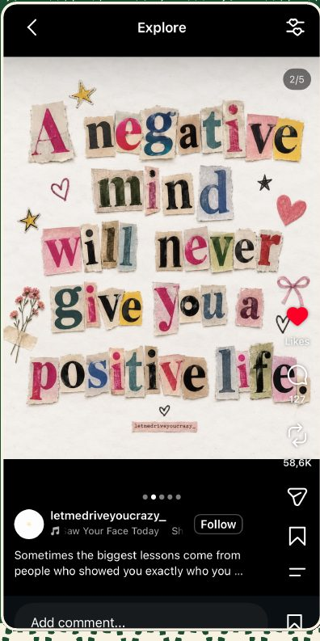
- Morphology
- “Negative” and “positive” are adjectives. “Never” is an adverb, and “will” is a modal verb.
- Syntax
- The sentence has a subject (“a negative mind”), a verb phrase (“will never give”), and two objects (“you” and “a positive life”).
- Phonetics
- The pronunciation of each word can be analyzed when the sentence is read aloud.
- Phonology
- “Negative” and “positive” share the same stress pattern, NEG-a-tive and POS-i-tive, which makes the contrast between them sound balanced.
- Sociolinguistics
- The post uses simple, informal language that is common on social media.
- Semantics
- “Negative mind” refers to negative thinking, while “positive life” suggests a happier life.
- Semiotics
- The colors, hearts, stars, and flowers support the positive message.
- Pragmatics
- The post encourages readers to change their way of thinking.
- Transformational grammar
- The statement can become a question by moving the modal before the subject: “Will a negative mind ever give you a positive life?”
02 Television series
Friends
“Maybe we should take a break.”
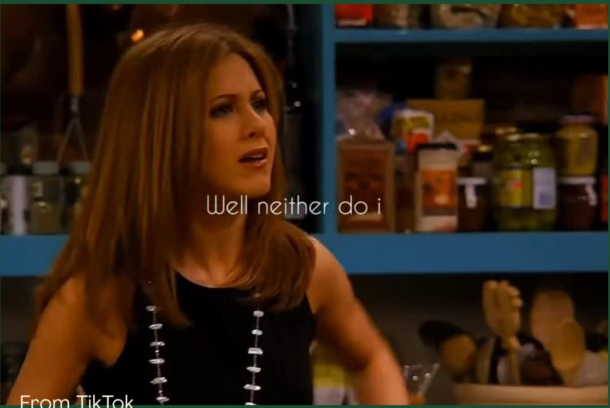
- Morphology
- “Maybe” is an adverb, “should” is a modal verb, and “break” is a noun.
- Syntax
- The sentence follows the structure Subject + Modal + Verb + Object.
- Phonetics
- The pronunciation and stress can be analyzed when Rachel says the sentence.
- Phonology
- The word “break” can receive emphasis because it is the most important word in the message.
- Sociolinguistics
- Rachel uses informal language because she is talking to her partner.
- Semantics
- “Take a break” means to separate from someone temporarily.
- Semiotics
- Rachel’s facial expression and body language show that she is upset.
- Pragmatics
- The meaning depends on the situation. Rachel doesn’t mean a short rest: she means a break from their relationship.
- Transformational grammar
- The sentence can become a question: “Should we take a break?”
03 Movie
The Hunger Games: The Ballad of Songbirds & Snakes
“If you can trust anyone in this world, you can trust me.”
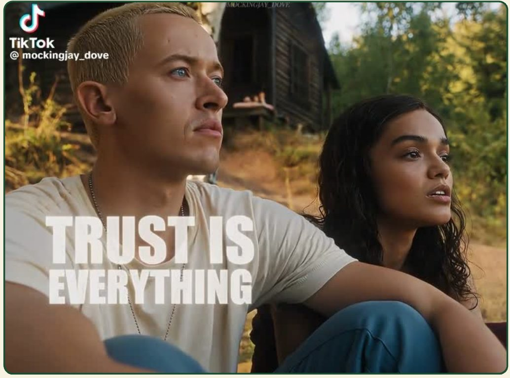
- Morphology
- “Trust” is a verb, “anyone” is a pronoun, and “world” is a noun.
- Syntax
- The sentence contains an if-clause followed by a main clause.
- Phonetics
- The pronunciation and stress can be analyzed as Lucy Gray says the sentence.
- Phonology
- The repetition of “trust” gives the sentence emphasis.
- Sociolinguistics
- The language is informal and personal because Lucy Gray is speaking directly to Coriolanus.
- Semantics
- “Trust” means believing that someone is honest and reliable.
- Semiotics
- Lucy Gray’s facial expression and tone help communicate sincerity.
- Pragmatics
- She is trying to convince Coriolanus that he can depend on her.
- Transformational grammar
- The sentence can be changed to a question: “Can you trust me?”
04 Song
“Can’t Catch Me Now”
“You can’t catch me now.”
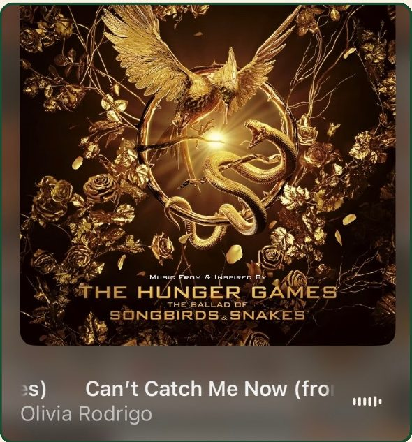
- Morphology
- “Can’t” is a contraction of “cannot.” “Catch” is a verb, and “me” is a pronoun.
- Syntax
- The sentence follows the structure Subject + Modal + Verb + Object + Adverb.
- Phonetics
- The sounds and pronunciation can be analyzed as the line is sung.
- Phonology
- The stress and rhythm emphasize “catch” and “now.”
- Sociolinguistics
- The song uses informal, conversational English.
- Semantics
- Literally, “catch” means to grab someone who is running away. In the song, it means the singer has escaped and the other person can no longer reach or hurt her.
- Semiotics
- The golden mockingjay on the cover connects the song to The Hunger Games, where the mockingjay is a symbol of survival and resistance.
- Pragmatics
- The line works as a challenge or a warning: the singer is telling someone that she is out of their control now.
- Transformational grammar
- The negative statement can become a question by moving the modal before the subject: “Can you catch me now?”
05 Cartoon
Shrek
“Ogres are like onions.”
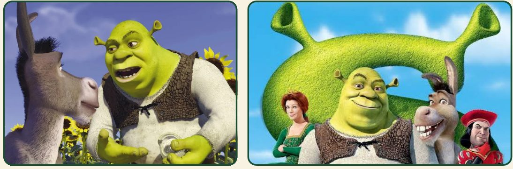
- Morphology
- “Ogres” consists of the root “ogre” and the plural suffix “-s.” “Onions” follows the same plural pattern.
- Syntax
- The sentence follows Subject + Verb + Prepositional phrase. “Ogres” is the subject, “are” is the linking verb, and “like onions” describes the subject.
- Phonetics
- In connected speech, the final consonant of “ogres” links with the vowel at the start of “are.”
- Phonology
- Shrek stresses “ogres” and “onions” to highlight the comparison between them.
- Sociolinguistics
- Shrek uses informal conversational English with Donkey. Their relaxed interaction reflects their developing friendship.
- Semantics
- Literally, ogres and onions are different things. The sentence compares them because both have layers.
- Semiotics
- The onion is a visual symbol of Shrek’s personality: its layers represent parts of his identity people can’t see right away.
- Pragmatics
- Shrek uses the comparison to tell Donkey that ogres are complex, and to ask him to look beyond stereotypes.
- Transformational grammar
- The statement becomes the question “Are ogres like onions?” by moving the verb “are” before the subject.
06 TED Talk
“The Power of Vulnerability”
“We are wired for connection.”
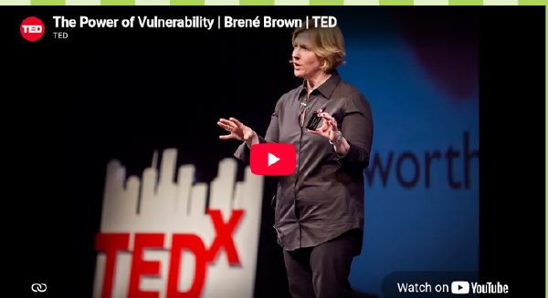
- Morphology
- “Vulnerability” is a noun formed from the adjective “vulnerable” with the suffix “-ity,” which turns it into a noun expressing a quality or state.
- Syntax
- “We are wired for connection” follows Subject + Verb + Complement. “We” is the subject, “are wired” is the verb phrase, and “for connection” completes the idea.
- Phonetics
- In “connection,” we can observe how the speaker produces the initial /k/ and the final syllable /ʃən/.
- Phonology
- “Connection” has three syllables, con-nec-tion, with primary stress on the second: con-NEC-tion.
- Sociolinguistics
- Brown uses conversational English, humor, and personal anecdotes to connect with a broad audience. Her style adapts to the audience and context.
- Semantics
- “Vulnerability” means being emotionally exposed or open to possible hurt. Brown presents it not as weakness, but as something connected to courage and relationships.
- Semiotics
- Her gestures, facial expressions, and movements on stage work as visual signs that reinforce her message.
- Pragmatics
- She uses humor and stories not only to entertain, but to make a serious topic relatable and invite listeners to reflect on their own lives.
- Transformational grammar
- “We are wired for connection” becomes “Are we wired for connection?” by moving the auxiliary “are” before the subject.
07 Meme
“This is fine”
“This is fine.”
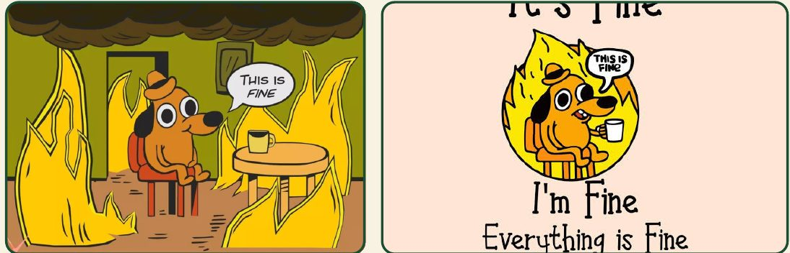
- Morphology
- “This” is a demonstrative pronoun, “is” is a form of the verb be, and “fine” is an adjective describing the situation.
- Syntax
- The sentence follows Subject + Verb + Subject complement. “This” is the subject, “is” is the linking verb, and “fine” describes the subject.
- Phonetics
- In natural speech, the final /s/ of “this” links with the vowel /ɪ/ in “is,” so the words flow together.
- Phonology
- The sentence can be said with calm intonation, especially on “fine,” which contrasts with the dangerous situation.
- Sociolinguistics
- The meme uses informal English and internet humor. People share it to talk about relatable stress, like exams or problems at work.
- Semantics
- Literally, the sentence says the situation is acceptable, but the burning room shows that everything is going wrong. The meaning is ironic.
- Semiotics
- The fire symbolizes chaos, and the dog’s calm expression represents denial. The image and text work together to make the joke.
- Pragmatics
- The dog isn’t really saying everything is fine. In context, the phrase communicates denial, frustration, or an attempt to act normal.
- Transformational grammar
- “This is fine” becomes “Is this fine?” by moving the verb “is” before the subject.
08 Video game
Minecraft
“Collect the wood.”
- Morphology
- In “crafting tables,” “crafting” is the verb “craft” plus “-ing,” and “tables” is “table” plus the plural suffix “-s.” Together they form a compound noun.
- Syntax
- “Collect the wood” follows Verb + Object. “Collect” is an imperative verb, “the wood” is the object, and the subject “you” is implied.
- Phonetics
- In “Creeper,” we can observe how the sounds are produced, including the initial consonant cluster /kr/.
- Phonology
- “Creeper” has two syllables with primary stress on the first: CREE-per.
- Sociolinguistics
- Players say “GG” (good game) as an informal expression. Online gaming communities develop their own shared vocabulary.
- Semantics
- In Minecraft, “Creeper” refers to a specific hostile creature that approaches players and explodes. The word has a meaning inside the game’s world.
- Semiotics
- The crafting table icon represents an object players use to create items. Players learn to connect the symbol with its function.
- Pragmatics
- When a player says “Watch out!” it works as a warning. Its meaning depends on the situation, like an approaching enemy.
- Transformational grammar
- The imperative “Collect the wood” can become the passive “The wood is collected.” The object becomes the subject.
09 Advertisement
Imperial beer, Costa Rica
“Diay, mae, tuanis.”
- Morphology
- Three informal lexical items: diay, an interjection; mae, an informal noun for a person, like “dude”; and tuanis, an adjective meaning “cool” or “great.”
- Syntax
- It isn’t a complete traditional sentence. It’s a short expression made of an interjection, a form of address, and an adjective, which makes the message direct and easy to remember.
- Phonetics
- “Mae” has two vowel sounds that create a short, recognizable pronunciation typical of everyday Costa Rican speech.
- Phonology
- The expression follows the sound system of Costa Rican Spanish, with the rhythm and intonation of informal conversation.
- Sociolinguistics
- “Mae” and “tuanis” are strongly associated with Costa Rican identity. The ad uses this variety to connect with local consumers and make the brand feel familiar.
- Semantics
- Diay reacts or starts a conversation, mae addresses someone, and tuanis means something good. Together they send a friendly, positive message.
- Semiotics
- The slogan works as a cultural sign of Costa Rican identity, representing friendship and belonging. It links the brand with Costa Rican culture.
- Pragmatics
- The goal isn’t only to give information but to create a friendly interaction with the audience and a positive impression of the brand.
- Transformational grammar
- It’s an abbreviated structure where context fills in what’s missing. A possible expanded version: “Diay, mae, ¡qué tuanis está esto!”
10 Newspaper article
BBC News
“Human activities are causing world temperatures to rise.”
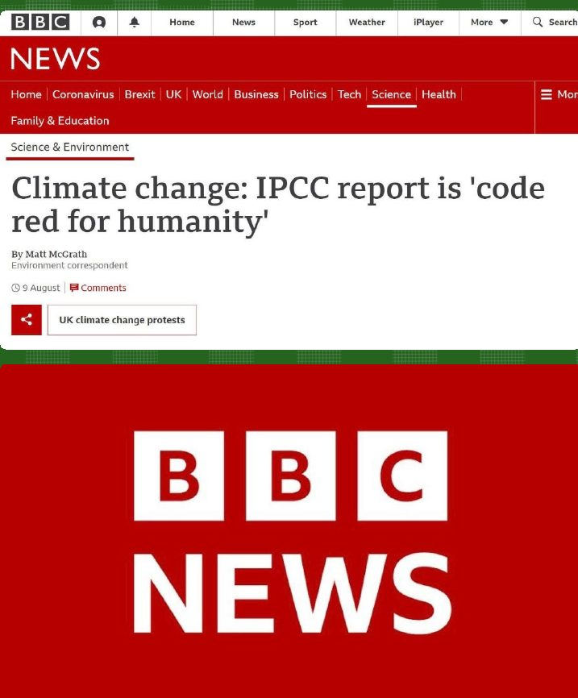
- Morphology
- “Activities” and “temperatures” add the plural suffix “-s.” “Causing” and “posing” add “-ing” to the verbs “cause” and “pose.” “Human” and “serious” are adjectives.
- Syntax
- The first sentence has a main clause, “Human activities are causing world temperatures to rise,” plus a participial phrase, “posing serious threats to people and nature.” The second sentence uses “but” to express contrast.
- Phonetics
- “Threats” begins with /θ/, made with the tongue between the teeth. “Rise” contains the diphthong /aɪ/, and “change” begins with /tʃ/.
- Phonology
- Words like ACtivities, TEMperatures, and NAture have clear stress patterns, and “threats” has the consonant cluster /θr/.
- Sociolinguistics
- The article uses formal, Standard British English for a broad international audience, with accessible vocabulary for readers of different backgrounds.
- Semantics
- “Threats” means possible dangers, “urgent action” means immediate measures, and “limit” means to reduce or control. Together they communicate how serious climate change is.
- Semiotics
- Photos of flooding, temperature graphs, and images of melting glaciers work as visual signs of the consequences of climate change.
- Pragmatics
- The journalist doesn’t only inform: “urgent action” stresses that measures must be taken now, and “but” contrasts the danger with the possibility of reducing it.
- Transformational grammar
- “Human activities are causing world temperatures to rise” becomes “Are human activities causing world temperatures to rise?” by moving “are” before the subject.
11 Podcast
The Moth
“I was 10 years old.”
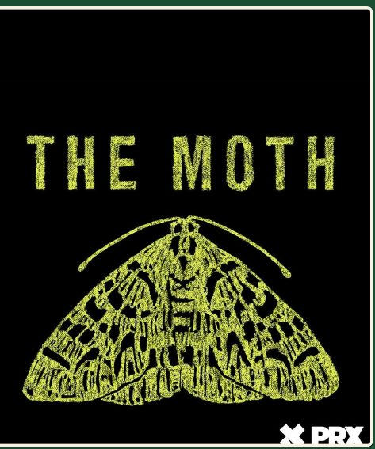
- Morphology
- “Was” is the past form of be. “Playing” and “growing” add the suffix “-ing.” “Playground” is a compound of “play” and “ground.”
- Syntax
- The speaker uses simple structures to tell a personal story. “I was 10 years old” follows Subject + Verb + Complement.
- Phonetics
- “Years” begins with the /j/ sound, and “playground” begins with a consonant cluster. Pauses and changes in voice make the story expressive.
- Phonology
- Important words receive stronger stress, especially when the speaker emphasizes an event or emotion, and the rhythm changes with the story.
- Sociolinguistics
- The speaker uses informal American English, like “man” and “You scared?”, reflecting everyday talk among friends.
- Semantics
- “I was 10 years old” tells his age, and “the playground” is where the event happened. The vocabulary helps the audience follow the story.
- Semiotics
- His voice, laughter, pauses, and tone work as signs of emotion, and the audience’s laughter shows which moments are funny.
- Pragmatics
- “You scared?” isn’t really a question about fear. It’s a challenge to pressure him into doing something.
- Transformational grammar
- “I was 10 years old” can be expanded into “When I was 10 years old, I used to play in the playground.”
12 Literary genre: fable
The Tortoise and the Hare
“The race is not always to the swift.”
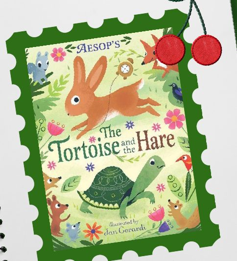
- Morphology
- “Slowly” is the adjective “slow” plus “-ly.” “Faster” is the comparative of “fast.” “Making” and “sleeping” add “-ing.”
- Syntax
- “The Hare was making fun of the Tortoise” follows Subject + Verb + Complement. The story also uses direct speech, questions, and subordinate clauses.
- Phonetics
- “Hare” begins with /h/, “slow” with the cluster /sl/, and “think” contains /θ/.
- Phonology
- In “Do you ever get anywhere?” the speaker can stress “ever” or “anywhere” depending on the meaning. Intonation separates questions from statements.
- Sociolinguistics
- The fable uses Standard English with simple vocabulary, a traditional storytelling style meant for a broad audience, including children.
- Semantics
- The tortoise represents patience and the hare represents overconfidence. “The race is not always to the swift” means success doesn’t always go to the fastest.
- Semiotics
- The animals are symbols of human characteristics, and the race represents challenges and competition.
- Pragmatics
- The Hare’s question “Do you ever get anywhere?” isn’t neutral: it’s meant to mock the Tortoise.
- Transformational grammar
- Active “The Hare mocked the Tortoise” becomes passive “The Tortoise was mocked by the Hare.” The event is the same, but the focus changes.
13 Comic strip
Garfield
“Next time I get to pick what we do.”
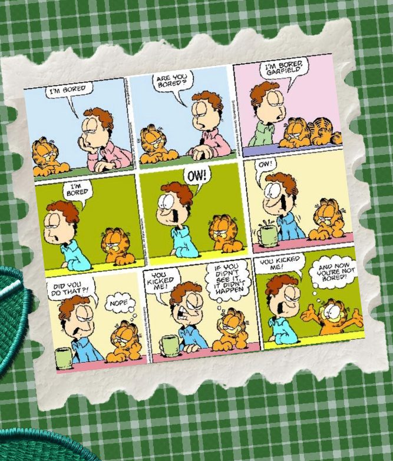
- Morphology
- “I’m” is a contraction of “I am.” “Bored” is an adjective describing a feeling. “Pick” is the base form of the verb after “get to.”
- Syntax
- “I’m bored” follows Subject + Verb + Complement. “So am I” uses subject–auxiliary inversion to agree. “Next time I get to pick what we do” has a main clause and a subordinate clause.
- Phonetics
- “I’m” contains a diphthong, and the sound effect “SMACK!” imitates the noise of hitting something.
- Phonology
- Strong stress on “BORED” emphasizes the frustration, and “SMACK!” represents a recognizable sound tied to an action.
- Sociolinguistics
- The characters use informal everyday English, like “I’m bored” and “So am I,” that readers from different backgrounds understand.
- Semantics
- “I’m bored” communicates a lack of interest, “So am I” expresses agreement, and the last line expresses the intention to make the next decision.
- Semiotics
- The comic combines words with visual signs: facial expressions, body movements, and the “SMACK!” sound effect.
- Pragmatics
- The humor comes from irony and an exaggerated reaction to a simple situation.
- Transformational grammar
- The contracted “I’m bored” and the full “I am bored” are two forms of the same sentence with the same meaning.